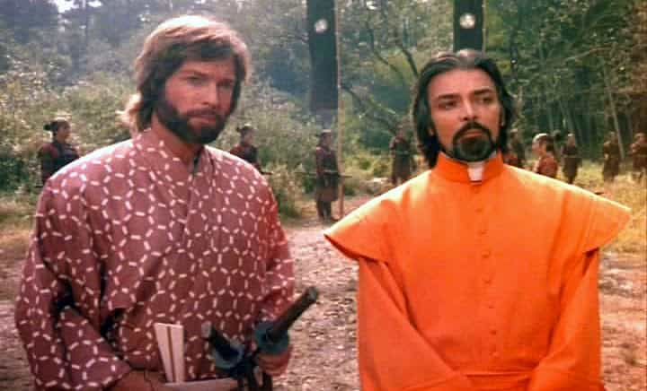
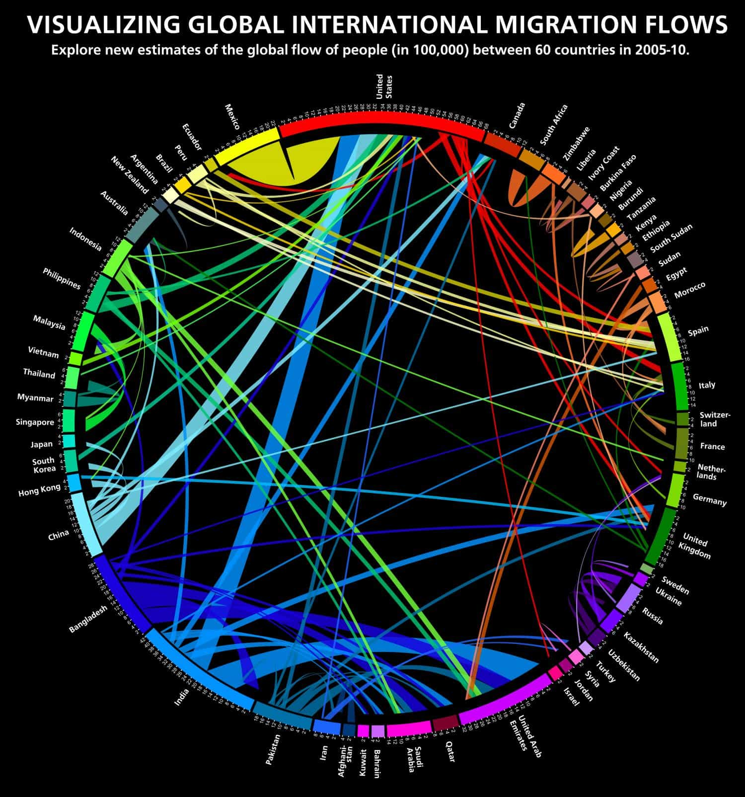

I have done some thrilling and exciting stuff over the years. However, it is hard to compete with the real William Adams (1564-1620), the British explorer who sailed almost the entire globe, became a samurai in Japan, and who has served as a source of inspiration for various cultural products in modern times.
In this piece I explore the destiny of Adams and how it has been depicted in Western popular culture. Furthermore, I briefly discuss some of the lessons that one can learn from his fascinating life journey. I have mainly used Giles Milton’s monograph Samurai William (2002) and this academic paper as points of reference.
The perilous route to Japan
William Adams was born in Gillingham, Kent, in England and aimed to become a sailor. More specifically he studied shipbuilding, navigation, and astronomy before he joined the Royal navy. He served an apprenticeship under Nicholas Diggens, a leading shipbuilder who later secured a profitable contract from the East India Company.
Later, he took up employment with the Barbary Company, as pilot and master, before joining a Dutch voorcompagnie (pre-Dutch East India Company) voyages to the East Indies. That left Rotterdam on 27 June 1598 under the command of Jacques Mahu.
The goal was to reach the East Indies, via Cape Horn, to acquire spices and other local commodities, but things did not proceed as planned. After a series of severe setbacks in the South Atlantic, only three of the cruise’s five ships made it through the Magellan Straits. These ships set course across the Pacific for Japan. However, only the Liefde made it all the way to Bungo in Kyushu, Japan, and arrived the 19 April 1600. Fortunately for Adams, he had been transferred to the Liefde and survived.
Before that the gradually decimated crew had reached Cape Verde Islands, Cape Lopez and Annabon in Africa, Mocha in South America (where many of the crew members were slaughtered), Hawaii, and the “Galapagos of the Orient”, the subtropical Bonin Islands, located southeast of Japan.
The journey indeed was fascinating, if not more than Adams’ experiences in Japan. About one and a half dozen crew members survived, which is only slightly more than 5% of the initial crew number of the five ships that dispatched from the isle of Texel, Holland, in 1598. Many died from dysentery, scurvy or were killed by local tribesmen (William’s brother Thomas was one of them). Some stole food and were hanged or ran away on exotic islands. The voyage would become a great adventure movie.
The rise of the first Western samurai
In subsequent letters, Adams claimed that he intended to return to England where his wife Mary and two children lived, but that he and the other survivors, whose maritime know-how was valuable to the Japanese, were prohibited from leaving Japan.
This may have been an afterthought, but unhesitatingly Adams did well in the land of the rising sun. After an initial encounter with the powerful warrior Tokugawa Ieyasu, later to be shogun, he and his crew members were incarcerated. Ieyasu found Adams’ accounts to be untrustworthy. However, after realizing that he had no obvious reasons to keep them locked up he released them, and those who were loyal to Adams took indirect advantage of his shipbuilding skills (he built a miniature replica of the Liefde which pleased Ieyasu). These skills, along additional knowledge in trade relationships (the fact that he spoke English, Dutch, Portugese and Japanese certainly helped), were Adams’ ticket to relative local success.
Later he got married to a Japanese woman, had children, and integrated into the exotic yet cultivated society. The Japanese considered Europeans to be too uncouth, and hence Adams and other survivors had to be taught local customs and etiquette. In contemporary Japan, Adams is often called Miura Anjin (Miura Pilot), which manifests how well he was regarded. A statue has been raised in Izumiōtsu (Osaka prefecture) to praise his commemoration.

The creation of the modern Adams myth can be dated precisely to 1872. In that year an expatriate Englishman, James Walters, “discovered” tumuli, two stele, and two lanterns on a hill near Hemi. Walters claimed that these were the tombs of Adams and his Japanese wife. Also a significant share of Brits took notice and “nationalized” Adams, which made him into their own symbol for English mastery. However, for most Westerners it took another century to know of this man, at least indirectly, through James Clavell’s book Shōgun (1975) and the subsequent TV adaption.
The question is if Adams is worthy of to be held in such a high regard? More critical academic sources have emphasized that his involvement in the trade between the Dutch and Japanese was exaggerated, and samurai was first and foremost a title that certain segments of the upper classes held in these times. He was not a sword master. Moreover his navy skills were not as unique as one can think (although the shipbuilding skills were since the Japanese largely were in a lack of them during this period).
Furthermore, his dealings with the hostile Portuguese Jesuit monks who already resided there, and were not too keen to let Protestants in to say the least, were seemingly not as crucial as some might have thought. He did not die as a particularly wealthy man either, although richer than most Englishmen and Japanese, but he left a cultural legacy after himself upon dying from malaria.
As for his fortune and properties he divided them fairly equal between his two wives. Even if the destiny of Adams is partly more constructed than real, he has had a cultural impact and influence in both the West and the East. He is also a manifest of how constructive inter-cultural exchange can occur.
William Adams in popular culture
As for Japanese pop culture I do not know that much since I do not read Japanese. However, the above-mentioned novel Shōgun (1975) and the nine hour television miniseries with the same name are indeed worthwhile and interesting. Although these may partly be historically incorrect and/or mixed with the more construed Adams myth, overall they depict his life relatively accurate and fact-based.
The novel in particular offers a good insight into Japan during the early 17th century before it was isolated (Sakoku) from further Western influences until 1853.

In 2016 a video game titled Nioh was released, which main character partly hinges on Adams, but with supernatural samurai skills rather than more modest practical and theoretical knowledge as its main ingredient.
Although I only play about five hours a month with a friend who has a PS4 unit, I would like to try it some time, as it is in the same spirit as Dark Souls and Castlevania. As far as Youtube clips and generally favorable reviews go, it appears worthwhile (in smaller portions as with all video games).
The lessons to be learned
Furthermore, one can learn a couple of lessons from the historical and near-mythical Adams. First, never give up, although hardships might await you under some circumstances. An athletic physique and good stamina could also be of great service. Secondly, greater risks may come with greater rewards (sometimes). If one makes it in life one can harvest from it.
This is also linked to the fact that Adams grasped the opportunity which came upon him and used his skills to survive and prosper in a vastly different environment. That is also a lesson for masculine migrants: if you have skills to offer a host country they will often be of use, whether it is Japan, Australia, Brazil or Poland that one has in mind.
Lastly, one has to realize that leaving one’s home and roots permanently, whether voluntarily or not, also comes with a two-sided situation. On one hand one will gain something new and hopefully reap the fruits of a fresh environment. It can be the case of for example job opportunities and women, as well as to obtain knowledge of the current culture.
On the other hand, one will leave one’s family, friends and home country behind and cannot, for obvious reasons, maintain these relationships and cultural roots. That is why travel and circular migration often are better options in the age of globalization. Move swiftly between locations like a hyper-modern Hermes but do not cut the roots off.

Conclusion
William Adams is certainly a fascinating historical figure who is interesting to learn about, whether it be through Milton’s book, academic sources, or pop cultural content. He also signifies sort of the essence of the European and Western mindset, such as to obtain valuable skills and make risks in order to find one’s way in life, or to even become legendary.
Read More: 5 Things I learned After My First Trip To Japan